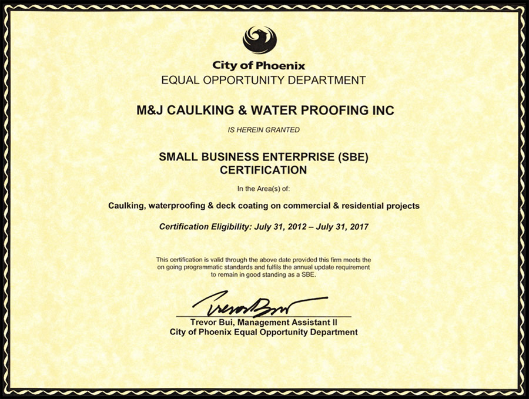

About Us

M & J Caulking is primarily a subcontractor doing business with general contractors. M & J's customers build new commercial projects, renovate existing buildings, expand existing buildings and TI projects. Customers are located throughout the Phoenix Metro area and the State of Arizona.
M & J Caulking has been in business since February 2000. We are SBE (Small Business Enterprise) certified with the City of Phoenix, and we renew every 2-3 years.
Some of our customers include:- Cochise Contractors
- D.L. Withers Construction
- FCI Constructors
- J&S Glass
- Vector Constructors
- Walters & Wolf Construction Specialties
Community Service
Company employees volunteer on a regular basis at a local food bank.
Links